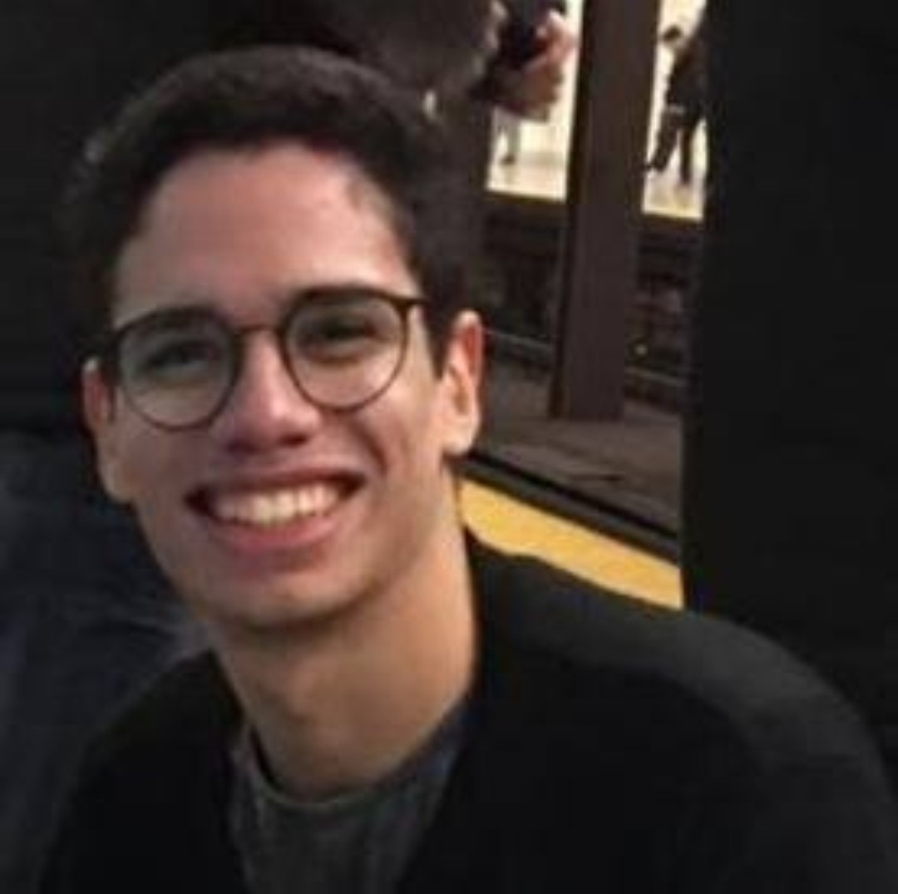

Designer e Desenvolvedor de Jogos, 18 anos, formado no projeto NAVE em programação de jogos digitais e agora sigo cursando design no CESAR School. Especialista em desenvolvimento de IoT, participando como mentor de diversos workshops no LOUCo voltados para a melhoria da cidade. Participante de projetos como o Wereld, semifinalista do Technovation challenge 2016.
Guilherme Albuquerque (Full-stack Developer)
João Felipe (Full-stack Developer)

Estudante de Design da Cesar, com 20 anos de idade, apresenta habilidades de desenho e trabalhos manuais como também tem conhecimento na área de arquitetura e administração. Além disso, é fluente em inglês e tem o nível básico de japonês. Tem interesse em trabalhar na parte de animação como também na área de jogos. Teve participação de trabalhar com UX e UI no Projeto NESS.
Estudante de Design da Cesar School, 24 anos de idade, possui grande conhecimento na área de jogos e gamificação, possui destreza com trabalhos manuais, tem experiência com edição de fotos e ilustrações digitais. Possui inglês avançado. Tem como objetivo principal trabalhar na área de jogos como Game lefter. Participação no Projeto NESS como UX e UI lefter.
Arthur Katz (Full-stack Developer)